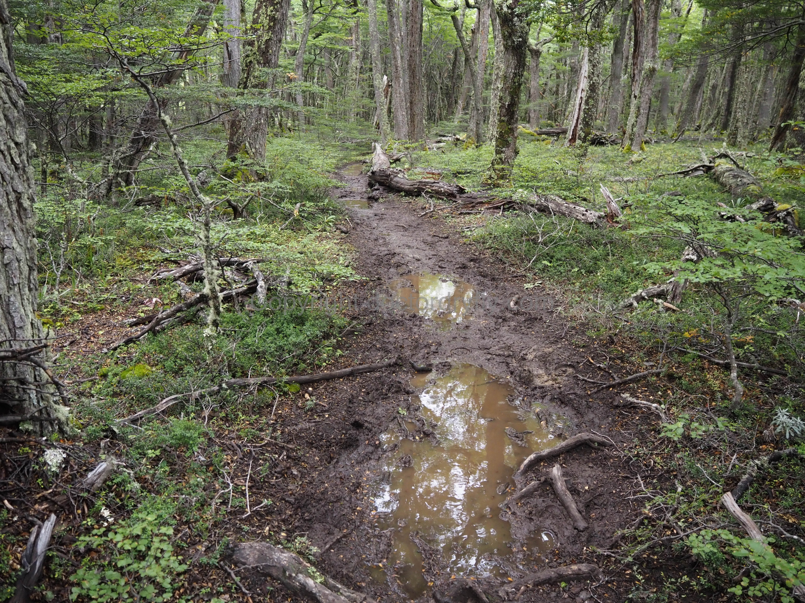

Problems with the O
I am trying to balance realism with pessimism, and be honest without being too negative. Let me reiterate what my experience was: the scenery was absolutely world-class, about the best I’ve ever seen, especially for such a long duration hike. All seven days offered incredible views. As I mentioned before, there is almost no step on the trail where there isn’t something amazing to look at.
The problems seem recent in development, which makes it feel like one of those things so common to people my age and younger: “you should have seen it back then”.
The refugio system is covered in its own section here, though I discuss the reservation system.
Crowds
The trail is crowded, at least compared to places I’m used to hiking in the Mountain West. The backside of the O is less crowded than the W side, but because everyone leaves from the same refugios at roughly the same time, you are almost never alone. Hikers are almost always within shouting distance of one another.
The front side, which includes W hikers going both directions, is even more crowded. Not only are hikers within shouting distance of one another, they are almost always within visual distance of each other as well. Crowds can be annoying in that it changes the feel of the hike, but most hikers were nice people and a little bit of a community forms after a few days.
It did feel like we were constantly having to negotiate passing and being passed on the trails. For example, if we passed a large, slower group, I’d be afraid of taking too long getting a picture 200 yards up the trail for fear of being passed by the group again. We found ourselves hop-scotching other groups frequently, and woe to the hiker that has the misfortune of being stuck behind a 10 or 15 person tour group. Most groups and hikers will let faster walkers pass, but this was far from universal.
The hike to the Towers is its own animal. It was packed, and we were almost always in a line of hikers. Most of these people are day visitors, most of them are slow hikers, and most of them have no sense of trail etiquette. Stopping in the middle of the trail to take a picture or re-adjust things? Check. Refusing to let faster hikers pass? Check. Refusing to yield to uphill hikers? Check. Stepping in front of incoming hikers only to go slow? Check.
Another picture of the crowds coming up to Las Torres. This was by far the most crowded hike on the circuit.
The Towers hike was by far the worst, but these problems exist to some extent on the entire trail, though the stretch around Grey, Paine Grande and Italiano was worse than on the backside. Again, the crowds aren’t disqualifying, but they are a thing.
The Refugio System and Scheduling
I detail the exact problems with the refugio system here, so this is a slightly different issue mentioned to me by a few other hikers. Because you need reservations at each of the refugios, and because you must stay at the refugios, it’s impossible to keep your own schedule. If you aren’t feeling well and want a rest day, you can’t decide to take one. If you are feeling strong and want to keep hiking, you can’t. In other words, it isn’t really a self-directed hike because you must stay on the schedule dictated by the refugio system. As mentioned, a lot of the mileage between the refugios was too low for us, but there wasn’t anything we could do about it. If something goes wrong, like a missed bus or delayed bag, you have to try and rebook all your reservations. It’s just not a system that gives hikers any freedom over their itinerary.
Trail Conditions
The trail itself is a disaster, which makes the hiking much harder than similar miles in the U.S. on forest service or national park system trails. We joked that the trail is an old guanaco trail as it seems graded for animals rather than humans. Switchbacks? Never heard of them. It’s just an old-timey trail, similar to the AT in that it goes up and down seemingly without reason, rather than gaining and holding elevation or taking an efficient route. Okay, most experienced hikers can deal with that.
The real problem is that much of the trail was basically destroyed and extremely muddy. I recognize this sounds like a minor inconvenience, but when you are constantly having to walk through and around mud, for miles and miles on end, it becomes exceedingly tedious and tiring. It was almost impossible to keep our boots dry. And, the later in the day you hike a section, the worse the trail conditions become. We hiked through almost nonstop rain, so I’m guessing the mud is not as bad in the middle of summer or during sunny weather, but the mud really, really slowed us down. Further, because of the way the trail is graded, the mud makes steep sections exceedingly slick and dangerous. The section from the top of the pass to Grey in particular was more of a full body workout than a hike, as one constantly has to sit down to shimmy down steep sections, grab trees for balance, scramble down rocks, and generally negotiate a slick and steep trail that would not be out of place in a rainforest. Again, it is hard to say how much of the mud was due to the rain, and how much conditions improve if things are dry, but my sense is that some amount of mud is always present. Besides the section from the pass to Grey, the Dickson to Los Perros section was also in very poor conditions. It was muddier and longer, but less steep, which made it a little bit more manageable.
 Miles and miles of mud made for difficult and slow hiking.
In other areas, particularly after Cuernos, small creeks run down the trails. I would assume there would be less water if it wasn’t raining, but it’s clear the trail has been eroded enough that the creek bed is now the trail. There is a lot of rock hopping here, which makes the going slow. The water and mud issues have caused hikers to create side trails, and in many places there is a zig-zagging network of trails as hikers move around the mud and water. And in some places, there is almost no way to avoid going off trail and contributing to the problem. One pool near Cuernos was probably six inches deep across the entire trail between bushes–there was simply no way to avoid getting your feet wet without going off trail. The creation of these side-trail networks is the National Park Service’s worst nightmare and I now understand why they spend so much time and energy telling people to remain on the trails, and why they close wet trails.
At some point, CONAF is going to have to engage in some serious trail building to fix these problems. Given the crowds and weather, these trail conditions are simply unsustainable, not to mention the impact on the environment.
Costs
Chile in general is not cheap, and in some ways the bureaucracy around the hike seems designed to squeeze every dollar possible out of visitors. Here is a summary of our costs, beginning with the bus to the park.
Bus ticket, Puerto Natales to Laguna Amarga: $10/person
Shuttle bus ticket, Laguna Amarga to Welcome Center $3.77/person
Park Entrance ticket: $49/person
Seron campsite for two people: $50
Breakfast, lunch, and dinner at Seron : $88/person
Dickson campsite for two people: $20 (didn’t use)
Los Perros campsite for two people: $20
Grey campsite for two people: $20
Breakfast and lunch at Grey: $38/person
Paine Grande campsite for two people: $24
Breakfast, lunch and dinner at Paine Grande: $70/person
Frances campsite for two people: $50
Canvas tent at Frances: $200
Shuttle bus ticket, Welcome Center to Laguna Amarga: $3.77/person
Bus ticket, Laguna Amarga to Puerto Natales: $10/person
Total cost per person (including campsites for two people): $656.54
The Weather
This one is hard because I don’t know what normal weather is, but it’s Patagonia, and the park is near the ocean, which pumps a lot of moisture through. For us, we hiked in the rain, camped in the rain, ate in the rain, and slept in the rain. I actually got used to it after a few days. The wind was also bad, but that’s more normal than the amount of rain we experienced.
It was intermittently cold, though not overwhelmingly so. With rain comes clouds, and lack of views. I just don’t know how to conceptualize dealing with the weather because if you can’t see anything, it’s not worth going. But how many hikers complete the O every year and have bad weather for a few of their hiking days? A few? Some? Most? There is no easy way to think about this, but honestly, if I’d known how bad the weather would be, I’m not sure I would have done the hike.
Thick clouds ruined a lot of the views.
If one could absolutely guarantee good weather, I think the good definitely outweighs the bad, but with the uncertainty, it becomes a more difficult decision. When I asked others whether the rain was normal, the typical response was something like, “es Patagonia,” meaning it’s Patagonia, what are you going to do? My fishing guide canceled our fishing trip because he said it was the worst summer weather he’d ever seen, which gives some indication as to how unusual this was. But, the rain we experienced wasn’t a week-long event. Most people I talked to said it had been going on for almost the entire month of February, and was expected to continue through much of March. Hiking in the rain is miserable; hiking in the rain and not seeing anything is worse. And forget trying to plan for the weather, the forecast in the morning for the afternoon wasn’t accurate, never mind a forecast weeks or months in advance when you need to book your reservations.